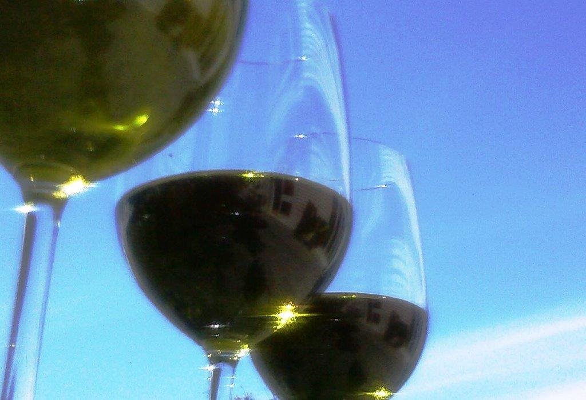

Extra Virgin Olive Oil


essential to taste


Kia ora. Welcome to great oil created from local living olives...
- - Dali Frantoio, a World’s Best Olive Oil, summer in a bottle
- - Dali Picual, top robust oil Spanish-style
- - Dali Coupage, leading Tuscan-style blend
- - Dali Koroneiki, sublime Greek-style for all seasons
And great olives...
- - Dali Kalamata, Martinborough gems under dark skies
From thriving earth, Dali leads in crafting olives for flavour and health. Living olives and oil powered by phenols, nature’s antioxidants. The healthiest oil tastes the best. And in Martinborough we produce some of the finest in Aotearoa and the world - essential to taste.
“...a triumph...divine...sublime...best I’ve tasted…bloody fantastic...” – customers
“...well balanced, harmonious, complex...” – international olive oil judges


super premium

Extra Virgin Olive Oil (EVOO) is proven goodness – cold-milled, first extraction, no additives, infusions or impurities. EVOO demands highest standards in grove management, pressing and storage – and a certificate of approval. See the red sticker on each bottle.
Dali goes one step further. Our EVOO contains high levels of phenols, nature’s antioxidants. The higher the phenolic content the more health benefits. Dali was the first olive oil in New Zealand to label phenol content, so you know the benefits we bring to you.
Dali transfers superior Estate management, care and nature directly to the bottle. That’s why we call Dali Super Premium Extra Virgin Olive Oil.


dali


The name Dali is
as enduring and noble as the olive itself. Dali is a composite image
for our olive grove.
Dali expresses global influences – olive varieties transported to New Zealand, the last country to be settled. Local influences provide added benefits – flavours translated by local terroir and sustainable grove management.


us

From August 2011 we continued an awardwinning olive grove established in 2005. There are 1100 trees – from Tuscany, Italy come Frantoio, Leccino, Pendolino varieties, and from Andalucían, Spain comes Picual. We are planting Greek and French varietals.
All oils have won medals at Olives New Zealand awards.
We have a fecund site set amid the Martinborough crucible.
The grove harbours essential minerals and life in fertile clay loam soils, weathered by temperate and sometimes temperamental seasons. We embrace these elements, encouraging the soil as a living system to work in harmony with
a diverse biosphere, including
our olive trees.
The grove is equally driven by
its estimated 13 million earthworms per hectare as it is by what grows above the ground. They are interrelated. We sow what we reap.


your dali

Dali Picual
Diva of vitality
Supreme Picual varietal is for stronger foods and diva moods. Dali Picual transforms itself and food during cooking – robust, rich and spicy for roasting, stews, suits Latin and Asian cuisines, wonderful with fish, crispy potato, risotto, pasta, paella. A complex, herbaceous cook’s oil, Dali Picual has rocket lettuce flavour with vibrant green hue. Mexico meets the Mediterranean, made under Wairarapa skies.
$20 per 375 ml bottle
order

Dali Select
For You
Leccino and Frantoio varietals combine for velvety smooth Tuscan style oil with a kiss of spice. Dali Select brings new life to a diverse range of deserving foods – sautés, baking, marinades, pesto, topping pasta, pizza, vegetables, salads and fruit, supping with bread or solo.
$20 per 375 ml bottle
order

Ordering
Dali Extra Virgin Olive Oil is available at Moore Wilson’s in the Wellington region, Martinborough Wine Centre in Martinborough and other outlets, or you can order here.
Ordering is via email – see Contact details – sales within New Zealand only
We have chosen 375 mL bottles to provide purchasing value, around the same price as quality 250 mL bottles. There is a limited supply for 2012.
Minimum order is two bottles ($40 + freight). We offer free shipping within New Zealand for purchase of packs of six bottles ($120).
A free recipe comes with each direct order.
Care
Heat, light and oxygen harm olive oil, so store in the dark at cool temperatures, for example at the back of a kitchen cupboard – not near a window or stove top or in a refrigerator.
Once the bottle is opened optimal use is 60-90 days. Ensure the cap is tightly closed.
Our oil is unfiltered and any cloudiness is natural.
Support local producers to ensure you are consuming extra virgin olive oil, certified by the Olives New Zealand. Look for the red OliveMark on our bottle.

contact
For orders, to join our mailing list or to provide feedback, please email:
Please include:
1. Your choice: Dali Select and/or Dali Picual + quantity of each (minimum order is two bottles).
2.Your name, physical address and telephone details.
Courier costs will be calculated and appear on a confirmation email after you submit your order
Note that any email address you enter on your order will only be used in relation to your order. We do not spam and will not pass the address to third parties unless legally obliged to.
Prices are in New Zealand dollars and include GST.
PAYMENT
Direct payments to The Vintiner’s Grove Limited, pay details provided
When making a payment please quote the reference number given for your confirmed order, provided to you on the confirmation email.
On payment, a receipt will be issued with the dispatch, along with our complimentary recipe.
Please sign for courier orders if you can.
At present we do not ship outside New Zealand.